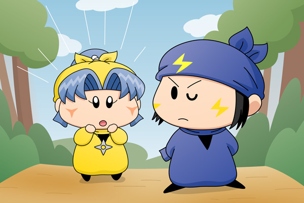

ヤマネ「ネズミ兄様！（にいさま）
やはりヤマネは子供っぽく見えるのでしょうか？」
ネズミ「いきなり何を言うかと思ったら・・。
ま、ヤマネはまだまだいろんな部分で子供でござるがな。
（拙者としては今のまま子供でいてくれた方が良いのでござるが）」
ヤマネ「やはりそのようでございましたか。。
はぁ・・・どうすればヤシチ兄様は私のことを女性と認めて
くださるのでしょうか・・・」
ネズミ「なんだ、ヤシチでござるか。
そうでござるな・・・ヤマネは誠実すぎるから、
嫌味のひとつくらい言えた方がよいでござるよ」
ヤマネ「嫌み・・・でございますか」
ネズミ「本音で付き合うには、時には嫌みも必要なのでござる。
拙者の知っている女は、嫌みを言われるとムキになって
本気で向かってくるでござるよ」
兄様の嫌みは攻撃力があるから…と言いたそうな表情を浮かべつつ、ヤマネはもう一度ヤシチへ会いに行ってみようと決心しました。本気になって自分の方を見てくれるヤシチを想像しながら。
舞台は変わり、ネズミを訪ねるヤマネを描いてみました。ネズミはヤマネにとっては頼りになる兄ですが、質問の内容が内容なだけにネズミは妹のために真剣になれないでしょうね。ネズミからのアドバイスを次回実践させてみますが、皆さんの予想通りの結果になるかと思います(^^;。
(2009/6/30)